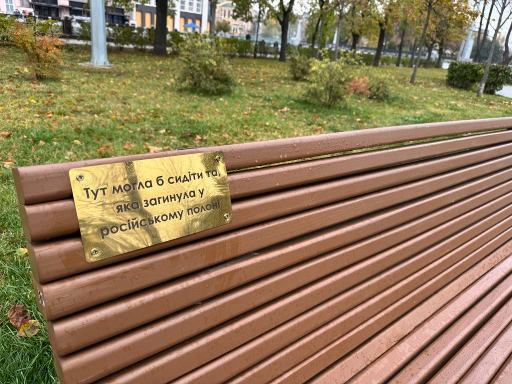

Памʼять у міському просторі
Подорожуючи українськими містами, ми звертаємо увагу не лише на нові меморіали, а й на те, яка памʼять уже займає міський простір.
У багатьох містах центральні площі та вулиці досі займають радянські памʼятники й місця памʼяті про «Вєлікую Отєчєственную» – Другу світову війну. Відбувається нашарування памʼяті, і якщо вдуматися, то це абсурдно і несумісно.
У Харкові радянські меморіали не домінують у центральному просторі. Частина з них розташована окремо — зокрема, у парку Слави.
Іще один достатньо відомий меморіал солдату – раніше був на початку міста, а тепер він серед великої магістральної розвʼязки, будинків і магазинів. У 2022 році цей «солдат» отримав поранення від російських снарядів.
За ним барельєф завісили синьо-жовтими прапорами. Цей простір добре показує, як змінюється міський контекст навколо старих меморіалів: обʼєкт залишається на своєму місці, але змінюється місто, яке його оточує, і значення, яке він має для цього простору.
Памʼять про сучасну війну
У Харкові вже формується окремий шар памʼяті про російсько-українську війну – у різних форматах і в різних частинах міста.
У 2023 році біля Палацу дитячої та юнацької творчості встановили памʼятник дітям, яких вбили росіяни. Біля нього містяни залишають квіти та мʼякі іграшки.
На центральній алеї біля Харківської обласної військової адміністрації зʼявилися прапорці з іменами загиблих харківʼян – практика стихійних меморіалів, яка поширилася в українських містах після початку повномасштабної війни.
У сквері біля флагштока побачите нативне нагадування у міському просторі – лавочки з табличками про загиблих, полонених та зниклих безвісти, з проєкту «Поміж нас». Поруч розташований цифровий екран із фотографіями загиблих.

Не лише памʼятниками
Кавʼярня «Паломник» виникла з мрії Андрія Авілова. Після його загибелі мама Олена відкрила цей простір і перетворила його на безпечний простір для своїх. На стінах висять фотографії Андрія та його загиблих побратимів.
У кавʼярні «ЛяТюШо» віднедавна є «Дзеркало памʼяті» – дзеркало з іменами загиблих. Додати імʼя своєї людини можна через працівників закладу.
Церемонія прощання
У Харкові немає єдиного сценарію прощання з усіма загиблими, наразі місто не пропонує цього, якщо стається щось відмінне від стандарту – це результат ініціативи та зусилля родини.
Місто може долучатися до церемонії, коли йдеться про Героя України, але загалом намагається не навʼязувати сімʼї власний сценарій.
На кладовищі №18 уже понад три тисячі поховань. Щодня тут відбуваються нові – по 3-5 поховань.
Є почесний караул, майоріють прапори України та військових бригад, встановлені памʼятники. На одному із секторів сформувалася Алея слави – поховання тут відбуваються з 2014 року.
Водночас Харків шукає відповідь на питання: «Яким ж має бути місце для поховання та памʼяті захисників?».
Прапори, які відслужили
Коли в місті постало питання: «А що робити з прапорами, які вже віджили своє?» – влада звернулась до Міністерства оборони задля вирішення питання, на що отримали відповідь, що наразі варто розбиратись із цим питанням на локальному рівні.
25 серпня понад 800 прапорів, які були встановлені в місті та на кладовищах, склали та передали на зберігання до ТЦК. Це була окрема офіційна церемонія, на момент нашого дослідження вона відбулася один раз – на День державного прапору.
Що відбувається з прапорами після передачі на зберігання – наразі невідомо. Практика також не закріплена окремим локальним положенням чи нормативним актом.
Під час війни міста часто змушені самостійно знаходити відповіді на нові питання меморіалізації, ще до того, як для них зʼявляється єдиний загальнодержавний порядок.
А що, якщо повторити?
Ми часто приїжджаємо в місто з готовими практиками. Якщо щось добре працює в одному місці, здається логічним просто повторити це в іншому.
Харків показує, що цього недостатньо.
От наприклад у місті є кілька моргів, тож немає єдиного маршруту, яким можна було б проводжати загиблих через місто. Різність районів, родин, обставин не дає спроможності зробити ритуал єдиним.
Те, що легко організувати в одному місці, в іншому може бути фізично неможливим або просто не відповідати досвіду людей для яких ця практика твориться.
Памʼять не можна просто привезти ззовні. От такому нас навчив Харків.